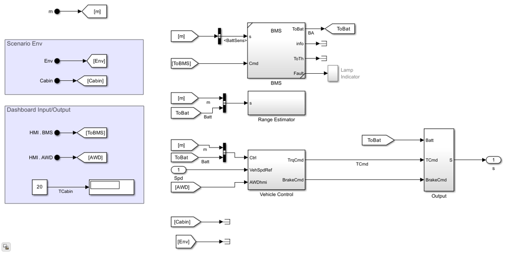

ControllerFRM
Fast-running model (FRM) variant of the vehicle controller with simplified control logic for reduced simulation time.
Model: ControllerFRM.slx
Parameters: ControllerParams.m
Thermal Coupling: No
Contents
Overview
The ControllerFRM uses simplified control logic to reduce simulation time while preserving the same port interface as the full Controller. It is suitable for parameter sweeps and quick trade studies where controller fidelity is secondary to simulation throughput.
open_system('ControllerFRM')

Ports
Inputs
- Drive cycle speed reference - Target vehicle speed from the drive cycle source.
- Vehicle speed feedback - Measured vehicle speed from the driveline.
- Battery status - SOC, voltage, and current from the BMS.
- BMS relay commands - Battery connection state.
Outputs
- Front axle torque command - Torque request to front motor (EM1).
- Rear axle torque command - Torque request to rear motor (EM2).
- Brake command - Mechanical braking torque request.
- Battery command - Charge/discharge mode signal.
Workflows
The ControllerFRM is selected by SetupPlantAbstract.m for the VehicleElectric (abstract) template. It is used when simulation speed is prioritized over controller fidelity.
Parameters
The ControllerFRM shares the same parameter file as the full Controller.
See ControllerParams.m for a complete list.